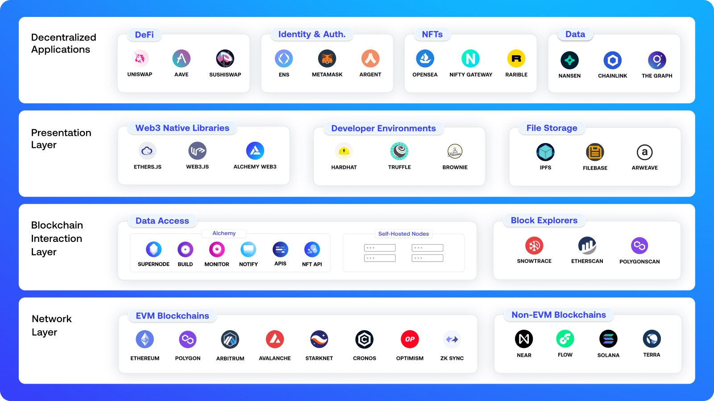

Como desarrollador, ¿Qué necesito para entrar en la web3?

Si ya eres desarrollador y tienes la meta, el deseo, o simplemente la curiosidad de adentrarte en la web3, en este blog te mencionaré las tecnologías que se utilizan en el tech stack para desarrollar.
Empecemos con un esquema básico, la web3, no funciona diferente de la web normal en teoría, lo que cambia es que en vez de tener un solo lugar centralizado con nuestros datos en el backend, está disperso por los nodos, ya sea directo en los smart contracts (si fuera Ethereum) o en el uso de algún servicio IPFS. Mientras el frontend es lo mismo que ya usas. Html, Css, JS, React, vue o cualquier otro frontend framework.
Es importan destacar que la web3 no es excluyente de las tecnologías existentes. Puedes tener tu backend en nodejs, php, java, .net, python o el que prefieras y aun así interactuar con servicios web3.
Desarrollo local
Así como en la web2, tienes tu desarrollo local, ya sea con docker o con instalaciones de tu servidor en el localhost. En el web3 tenemos herramientas como hardhat o ganache
Backend
Hardhat
Es una herramienta para correr Solidity localmente. Encuentras una manera fácil para hacer deploy de tus contratos, correr tests y debuguear código en Solidity en diferentes versiones.
Se corre como un paquete global de Node.js que se instala con NPM
npm install --save-dev hardhat
Ganache (Truffle Suite)

Tu blockchain local en un clic. Con Ganache pueden lanzar rápidamente un blockchain personal para correr tus tests, e inspeccionar el estado mientras controlas como la cadena opera.
Para instalarlo se debe correr un ejecutable y se instala como cualquier otra aplicación en tu sistema.
Aprende Solidity
Uso de ejemplo Solidity, pero podrías aprender cualquier otro lenguaje como Rust para programar en el blockchain de solana.
Regresando a Solidity, si ya estás familiarizado con JavaScript, notaras muy familiar la sintaxis de Solidity. Es un lenguaje de tipado estático, con llaves, diseñado para desarrollar smart contracts que corren en Ethereum.
Aquí un ejemplo de un contrato en Solidity, un sencillo Hello World
// SPDX-License-Identifier: MIT
pragma solidity ^0.8.0;
contract MyContract {
function helloWorld() public pure returns (string memory) {
return "Hello, World!";
}
}
Si ya has programado antes podrás encontrar las similitudes.
-
Se declara la licencia del contrato. Recuerda que la mayoría, por no decir todos, los contratos son open source, así que cualquiera puede leer o interactuar con ellos.
-
Se declara la versión del compilador (
pragma solidity ^0.8.0) -
Se declara el contrato como tal. Palabra reservada
contracty el nombre designado. -
Se crea la función
helloWorld. Nota que después del nombre, tienen otros términos. Estos términos se llamanmodificadores de acceso. Elpublicse comporta como ya imaginas, el interesante y nuevo espureque indica que esta función no requiere gas para hacerla funcionar. Es solo lectura, entre otras cosas.
Como todo lenguaje tiene sus partes complejas y únicas que te invito pruebes y aprendas en su documentación
Perfecto, ya tengo mi blockchain y mi contrato ¿Ahora que?
Listo, cada herramienta tiene su modo de publicar o desplegar tus contratos a tu red local.
Por ejemplo, con Hardhat:
npx hardhat compile
Con Ganache, se debe usar otra herramienta de la misma familia llamada truffle, y se ejecuta de la misma manera que hardhat
npm install truffle -g
y luego para compilar
truffle compile
Al tener tu contrato desplegado ya podrás interactuar con él, usando web3.js o ether.js. En otras palabras, ya se trata del frontend.
Frontend
Web3 JS

Web3.js es la herramienta que maneja toda la lógica para conectarnos a nuestros smart contracts. Al compilar un contrato se genera un archivo llamado abi.json. Este archivo expone todos tus métodos públicos de tu smart contract, junto con los parámetros y tipos que espera. De esa manera tu frontend se podrá comunicar de manera exitosa con tus contratos.
La manera en que interactuamos con ellos es por pasos:
-
Instancias una referencia a tu archivo
abi. Recuerda que este es el que sabe, el cómo, cuando y donde, de la comunicación con tus contratos. -
Al tener la referencia de tu
abi, puedes acceder por notación de objetos a tus métodos
// Importamos el abi del contrato
import abi from "./utils/EtherFavoriteSongs.json";
this.contractABI = abi.abi;
...
// Obtenemos la referencia a la billetera del usuario
const provider = new ethers.providers.Web3Provider(ethereum);
const signer = provider.getSigner();
// Creamos una nueva instancia del contrato
const favoriteSongsPortalContract = new ethers.Contract(this.contractAddress, this.contractABI, signer);
// El método getTotalSongs esta definido en nuestro contrato de solidity
let count = await favoriteSongsPortalContract.getTotalSongs();
Así de fácil podemos conectar nuestros nuevos contratos con nuestro conocido y confiable frontend.
El código completo de este ejemplo está en este repositorio
Billetera (wallet)
Otra diferencia entre web2 y web3 es que el usuario se identifica con una "billetera", este es un término que no representa realmente lo que es y puede confundir a personas nuevas o que no tienen interés financiero en el blockchain. La más popular de estas herramientas es metamask aunque no la única, que te deja tener una dirección hexadecimal única, y puedes generar múltiples direcciones. Cada una de estas te sirve para identificarte con aplicaciones web3. En vez de tener que hacer login con tu correo una y otra vez, solo debes conectar tu dirección (en tu billetera) y ya puedes interactuar con la web3.
Estas billeteras son gratuitas (si son software) y se instalan en segundos. Puede ser usada como extensión en tu navegador o en aplicaciones individuales.
Esto es fundamental para el funcionamiento de la web3. Cada interacción con el blockchain queda firmado por quien hizo la petición. Así queda todo registrado en el blockchain.
Resumen
-
Necesitas una blockchain local para tu desarrollo.
-
Necesitas Aprender un lenguaje para hacer tus contratos (Solidity, por ejemplo).
-
Necesitas compilar tus contratos.
-
Necesitas un frontend, con lo que ya sepas o aprender sobre frontend. Html, css, js, react o vue js.
-
Necesitas interactuar con web3.js en tu frontend.
-
Necesitas una billetera para interactuar con tus contratos.
El ecosistema sigue creciendo aceleradamente, cada vez hay más herramientas y se van completando los vacíos. Todavía hace falta mucho product design, y desarrollo para volverlo mainstream. Hay gente que se refiere al estado actual del web3 como con los 90 en la web2. Largos tiempos de espera, a veces falla, falta de feedback al usuario. Así que si te interesa esto, puedes ser parte del futuro de la web, que hoy mismo se está construyendo.
Comentarios
Comments powered by Disqus